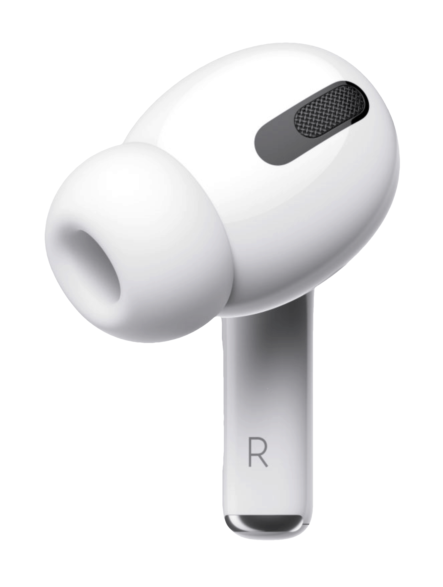

We refined the details of comfort, creating a new class of in-ear headphones with a customizable fit that forms an exceptional seal for Active Noise Cancellation. You'll feel your music, not your headphones.


The Wireless Charging Case delivers more than 24 hours of battery life to keep you and your AirPods Pro on the go. And it’s compatible with Qi-certified chargers.
Use the force sensor to easily control music and calls, and switch between Active Noise Cancellation and Transparency mode.

Designed to keep up with you, AirPods Pro are sweat and water resistant,1 and they feature an expanded mesh microphone port that improves call clarity in windy situations.